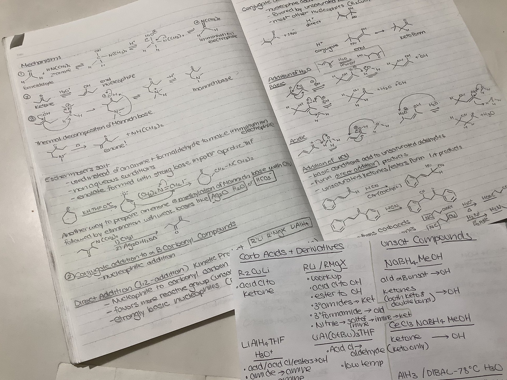
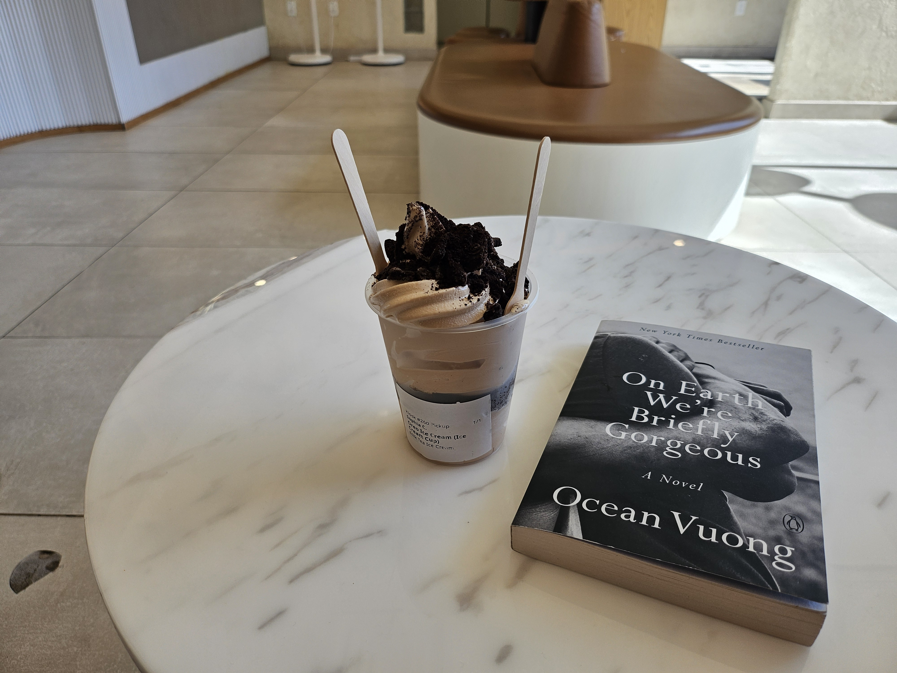

My Nights
Anecdotes and Advice for Better Sleep
One of the best and most often given advice among sleep experts, is to have a good wind-down routine. This alternative name for a bedtime routine lets your body know it's about to get rest, and makes you sleepy enough to fall asleep without much issue. Like all habits, it takes time to build, so finding a routine that works for you, and that you enjoy doing, is the best. Here's a small insight into my nightly routine.
1. Go for a walk
Getting a little bit of excercise before bed can help you relax. Doing strenous cardio or heavy weightlifting may be too exiciting and make it harder for you to sleep, so a nice, easy walk around your neighborhood would do the trick. Try this with a friend and build a habit to promote heart health along the way. Additionally, exposure to natural light can help you regulate your circadian rhythm!
2. Learn something
Long-term memory forms during sleep, so getting a bit of studying before bed can benefit both your grades, and your health. By tiring out your brain a little, your sleep will feel much more satisyfing. Make sure not to work too close to bedtime, however, as stress can negatively impact your sleep quality.
3. Eat a good dinner
Eating a fulfilling, nutrient-rich dinner a few hours before bed gives you enough time to digest. My favorite dinner to make is a quick and easy rice bowl with vegetables and proteins. It is generally reccomended to finish eating two to four hours before your bedtime.
4. Read a book
Reading before bed can help you relax, settle into your routine, and prevent degenerative brain diseases like Alzheimers in the long run. My current pick is On Earth We're Briefly Gorgeous by Ocean Vuong, a book I'm reading with my book club.
5. Do some self-care

Washing my face and doing my skincare makes me sleepy immediately. While cells repair and turn over during the night, I like to take full advantage of this biological process by giving my skin everything it needs. My current line-up consists of an oil-based cleanser to remove my makeup, a water-based cleanser to remove dirt and sweat, a toner to balance my skin's pH, and a moisturizer to lock everything in and keep it hydrated.
If these sleep tips fail you, or you have no idea what's going wrong, keep track of your sleep for a couple weeks. This can help you identify habits that might be keeping you tired in the morning and wide-awake at night. Keeping track of this can also be an invaluable tool when seeking medical advice for sleep-related issues. Here is a form from the NIH to get you started.
 Here is a printable link to their website.
Here is a printable link to their website.